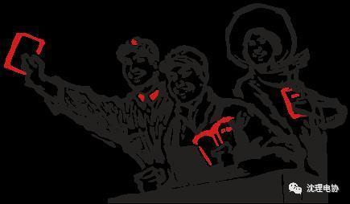
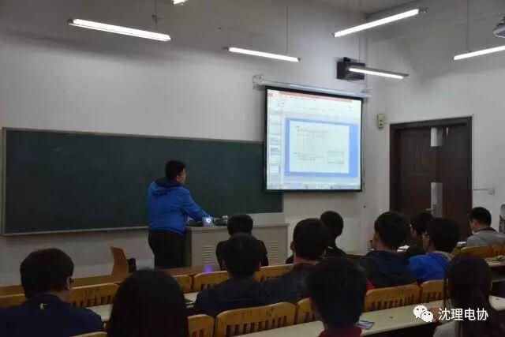
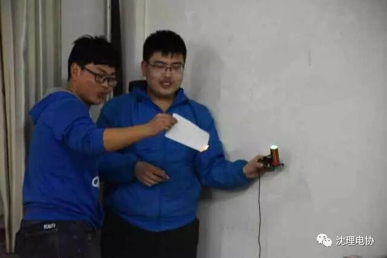
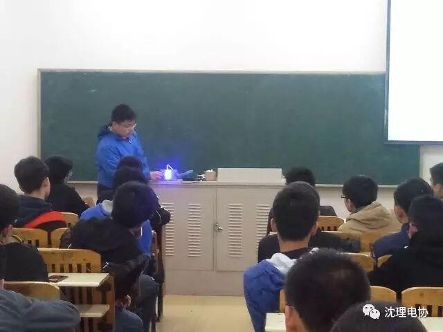

使用小程序
快，关注这个公众号，一起涨姿势～

随着电协LED比赛的日子即将到来，各位准备报名的同学的内心有没有点小激动呢？
跟着小编一起走进今天的课堂吧

译码器(decoder)是一类多输入多输出组合逻辑电路器件，其可以分为：变量译码和显示译码两类。 变量译码器一般是一种较少输入变为较多输出的器件，常见的有n线-2^n线译码和8421BCD码译码两类；显示译码器用来将二进制数转换成对应的七段码，一般其可分为驱动LED和驱动LCD两类。
本次活动不仅仅有学长在讲解，还有我们“英俊”、“潇洒”的王枭同学为大家授课呦，看他讲的多么认真！

看看他们两个在做什么
不（xuan）可（ku）告（wu）人（bi）的实（zuo）验（pin）呢？

依旧认真听讲的同学们
今天的电协大讲堂就到这里了
下周五我们不见不散呦！
沈理电子协会
sylgdzxh
编辑——王 喆
带你进入科技的世界
长按二维码关注